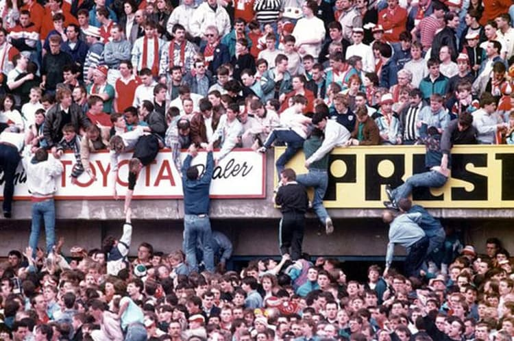
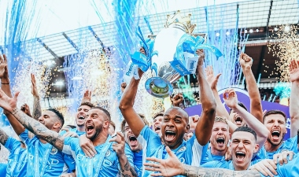

História da Premier League
TRAGÉDIAS NOS ANOS 80
Em 1979, Margaret Thatcher assumiu o cargo de primeira-ministra do Reino Unido pelo Partido Conservador. A Dama de Ferro, como era conhecida por conta de suas medidas políticas rígidas que afetavam a classe dos trabalhadores, teve papel questionável nas drásticas mudanças ocorridas no futebol inglês.
O Manchester United, um dos clubes mais tradicionais do país, foi fundado em 1878 por um grupo de ferroviários. A relação de diversas equipes com as classes trabalhadores do Reino Unido perduraram por anos, mas essa relação começou a degringolar na década de 1980.
Em maio de 1985, uma tragédia aconteceu na partida entre Bradford City e Lincoln City, no Estádio Valley Parade. Um incêndio tomou conta das arquibancadas de madeira do local da partida e o evento ocasionou a morte de 56 pessoas.
A causa do incêndio permanece incerta até hoje, mas acredita-se que o fogo tenha se espalhado após um cigarro acesso ter sido jogado em um acúmulo de lixo, segundo a imprensa inglesa. O fato fez com que Thatcher começasse a criar um desdém maior pelo esporte.
Após duas semanas, o Liverpool viajou para a Bélgica para encarar a Juventus pela decisão da Copa dos Campeões (atual Champions League). Antes da partida, 39 torcedores da Velha Senhora foram mortos.
No período em que o hooliganismo era muito vivo na Inglaterra, os torcedores dos Reds foram apontados como culpados. As acusações não levaram em consideração as condições do estádio e a má distribuição de ingressos no Estádio de Heysel. Como consequência, a primeira-ministra ordenou que os clubes ingleses não disputassem competições europeias. O que só voltou a acontecer em 1991/1992.
A GOTA D'ÁGUA
Em 1987, o duelo entre Luton Town e Millwall foi marcado por atos de violência cometidos por torcedores da equipe visitante que invadiram o gramado de jogo. Na ocasião, 47 pessoas saíram feridas, sendo 33 policiais.
Estes casos fizeram com que a Dama de Ferro implementasse medidas elitistas para o esporte. Em 1989, o Football Spectatos Act foi criado e tinha como função restringir o acesso do público aos estádios aos torcedores que possuíam uma espécie de licença.
No mesmo ano, a maior tragédia do futebol inglês acontecia. Em uma partida entre Liverpool e Sheffield Wednesday, disputada no Estádio Hillsborough, exatos 96 torcedores dos Reds morreram na casa da equipe adversária.
O evento, conhecido como Desastre de Hillsborough, causou distúrbios no esporte. As autoridades policiais de South Yorkshire, além de Margaret Thatcher, buscavam culpar os fãs do Liverpool por conta das fatalidades.
ORIGEM DA PREMIER LEAGUE
Após a tragédia, Lord Justice Taylor foi nomeado para conduzir um inquérito sobre o evento. Em 31 dias, o Chefe de Justiça da Inglaterra apontou como principal causa para o desastre as falhas de controle da polícia local.
Além disso, Taylor escreveu uma série de recomendações que mudariam a forma de se fazer futebol no Reino Unido. O relatório afirmava que a acomodação de torcedores em pé não era segura, o que promoveu uma mudança nos estádios do país, que passaram a ter uma cadeira para cada espectador.
O Relatório Taylor serviu como base para o que viria a ser a Premier League. Em 1992, os clubes da elite inglesa decidiram criar uma nova liga. Após um encontro com membros da Associação Inglesa de Futebol, o anúncio do surgimento da competição aconteceu.
Antes disso, em 1991, a juíza Rose abriu caminho para que os clubes ingleses liderados pelo Big Five (Manchester United, Liverpool, Arsenal, Tottenham e Everton) criassem uma divisão superior na Inglaterra.
Após a aprovação da Football Association, ocorrida em 1992, as equipes evitavam uma greve entre jogadores. Para agradar a Federação Inglesa, os clubes também estavam dispostos a criar uma liga com 20 times participantes com o objetivo de desgastar menos os atletas para que jogassem com mais vigor torneios como Eurocopa e Copa do Mundo.
Logo após a criação da Premier League, a BSkyB adquiriu os direitos de transmissão da competição por cinco anos pelo valor de 304 milhões de libras (quase R$ 2 bilhões na atual cotação), o que surpreendeu outras emissoras concorrentes.
A ERA DE OURO
Com cada vez menos casos de hooliganismo nos estádios e um Campeonato Inglês fortalecido, tanto do ponto de vista esportivo quanto do aspecto econômico, a Premier League se tornou um case de sucesso para o futebol mundial.
A credibilidade fez com que equipes que não possuíam uma grande tradição no cenário inglês ganhassem protagonismo no século XXI. Os casos mais explícitos são os de Chelsea e Manchester City, que não considerados clubes modestos, mas a partir dos anos 2000, quando foram comprados por grandes investidores, passaram de figurantes a protagonistas.
A Premier League é a competição que mais consegue fazer dinheiro no mundo, sendo televisionada em mais de 190 países. Com isso, os clubes ingleses são os que mais tem poder de movimentar o mercado e, consequentemente, adquirir os melhores jogadores em busca de um campeonato mais forte e mais atraente.
Créditos do texto: Lance.